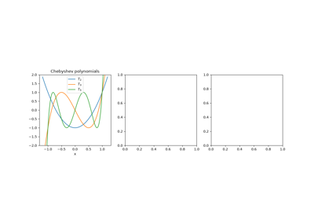
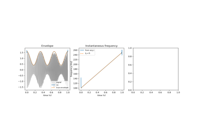
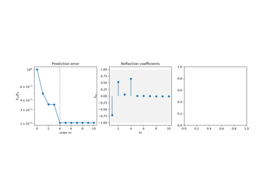
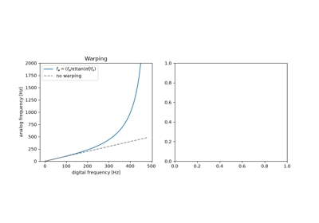
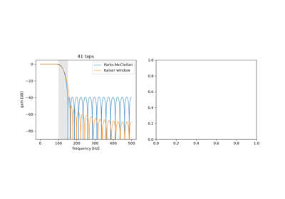
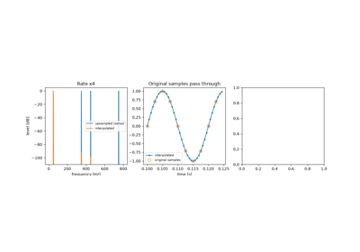
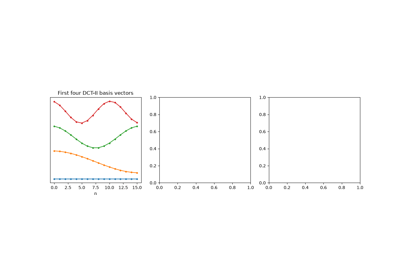

Breakthroughs in Signal Processing#
“If a function f(t) contains no frequencies higher than W cps, it is completely determined by giving its ordinates at a series of points spaced 1/2W seconds apart.” – Claude E. Shannon, Communication in the Presence of Noise (1949)
Signal processing grew out of the search for hidden periodicities in
scientific records, and out of the telephone, radio and radar engineering
of the first half of the twentieth century. Fourier series and the
periodogram described signals by their frequencies, and Chebyshev’s
approximation theory and Hilbert’s conjugate functions supplied tools the
field would need later. Analogue filter design
and the theory of sampled servomechanisms prepared the ground for digital
filters, while the war and its aftermath brought optimal filtering,
quantization and the sampling theorem. In the 1960s cheap computation
arrived: the fast Fourier transform and fast convolution, adaptive
filters, autoregressive fitting, the cepstrum, digital filter design from
analog prototypes, window and equiripple FIR design, and the cascaded
sections that make recursive filters work in finite precision. The early
1970s added multirate processing and the discrete cosine transform. The entries trace the ideas behind
engineeringkit.signal_processing. Each links to the implementing
function and to a gallery example devoted to it.
1854 – Chebyshev’s Equiripple Approximation#
Pafnuty Chebyshev, analysing the error of Watt’s parallel-motion linkage, asked which polynomial of degree \(n\) with leading coefficient 1 stays closest to zero on an interval. The answer is \(T_n(x)/2^{n-1}\) with \(T_n(x) = \cos(n\arccos x)\), whose error reaches its maximum \(n + 1\) times with alternating sign; the alternation characterizes every best uniform approximation. Network theorists of the 1930s put \(T_n\) into the squared gain of a filter, \(1/(1 + \varepsilon^2 T_n^2)\), spreading the passband error evenly and buying a steeper cutoff than Butterworth’s for the same order. The filter application is checked against Oppenheim and Schafer, a textbook.
Implementation: engineeringkit.signal_processing.chebyshev1_lowpass(),
engineeringkit.signal_processing.chebyshev2_lowpass() and
engineeringkit.signal_processing.iir_order(). The example checks the
minimax property of \(T_n\), the equiripple passband and the order
saved against Butterworth.
References: P. L. Chebyshev, “Théorie des mécanismes connus sous le nom de parallélogrammes,” Mém. Acad. Sci. St.-Pétersbourg, Savants étrangers 7 (1854) 539-568; A. V. Oppenheim and R. W. Schafer, Discrete-Time Signal Processing, 3rd ed. (Pearson, 2010), sec. 7.3.

Chebyshev’s equiripple approximation (1854)
1898 – Schuster’s Periodogram#
Arthur Schuster wanted to know whether meteorological records hid a 26-day period linked to the Sun’s rotation. He computed the squared magnitude of a record’s Fourier coefficients at each trial period, the periodogram, and worked out how high a peak pure noise is likely to produce. A true periodicity gives a peak that grows with the record length, while the noise does not shrink. The periodogram is the discrete Fourier transform’s squared magnitude, and Parseval’s theorem makes it an energy decomposition of the record.
Implementation: engineeringkit.signal_processing.dft(),
engineeringkit.signal_processing.idft(),
engineeringkit.signal_processing.power_spectral_density() and
engineeringkit.signal_processing.Spectrum. The example finds a weak
26-day sine in noise four times stronger and checks Parseval’s theorem.
References: A. Schuster, “On the investigation of hidden periodicities with application to a supposed 26 day period of meteorological phenomena,” Terr. Magn. 3 (1898) 13-41.

1899 – Gibbs’s Phenomenon#
Albert Michelson’s mechanical harmonic analyser summed 80 Fourier terms, and its square waves overshot at every jump. Michelson suspected the machine. Josiah Willard Gibbs showed in letters to Nature that the partial sums of the series overshoot by about 9% of the jump however many terms are kept; the overshoot only narrows toward the discontinuity. Henry Wilbraham had found the same effect in 1848. The ringing reappears whenever a spectrum is truncated, in filter design as much as in Fourier series.
Implementation: engineeringkit.signal_processing.fourier_partial_sum().
The example checks the peak against \(\tfrac{2}{\pi}\operatorname{Si}(\pi)\)
and shows that the mean squared error still falls as \(1/K\).
References: J. W. Gibbs, “Fourier’s series,” Nature 59 (1898) 200 and 59 (1899) 606; H. Wilbraham, “On a certain periodic function,” Cambridge Dublin Math. J. 3 (1848) 198-201.

1905 – Hilbert’s Conjugate Functions#
In the third of his communications on linear integral equations, David Hilbert paired a function on the unit circle with its conjugate, the boundary values of the real and imaginary parts of a single analytic function, through a singular integral with kernel \(\cot\frac{s-t}{2}\); G. H. Hardy later named the pairing the Hilbert transform. On the frequency axis it multiplies by \(-j\operatorname{sgn}\omega\), a -90° shift of every component. Gabor (1946) used it to build the analytic signal \(x + j\mathcal{H}x\), whose magnitude is the envelope and whose phase gives the instantaneous frequency. The date and pages are from the Göttingen Nachrichten record; that the transform appears there is taken from King’s monograph, a secondary source.
Implementation: engineeringkit.signal_processing.hilbert_transform(),
engineeringkit.signal_processing.analytic_signal(),
engineeringkit.signal_processing.envelope(),
engineeringkit.signal_processing.instantaneous_frequency() and
engineeringkit.signal_processing.hilbert_fir(). The example checks
the -90° shift, recovers the envelope and sweep of a modulated chirp and
compares a 61-tap FIR transformer with the FFT method.
References: D. Hilbert, “Grundzüge einer allgemeinen Theorie der linearen Integralgleichungen (Dritte Mitteilung),” Nachr. Ges. Wiss. Göttingen, Math.-Phys. Kl. (1905) 307-338; F. W. King, Hilbert Transforms, vol. 1 (Cambridge University Press, 2009), ch. 1; D. Gabor, “Theory of communication,” J. IEE 93, part III (1946) 429-457.

Hilbert’s conjugate functions and the analytic signal (1905)
1910 – Haar’s Wavelet#
In his dissertation, Alfréd Haar built an orthonormal basis of square-integrable functions from a single step: the difference between the two halves of an interval, shrunk and shifted to every scale and position. Each basis function lives on a short interval, so a jump in a signal touches only a few coefficients at each scale, where a sine wave spreads it over every Fourier coefficient. The fast transform takes averages and differences of neighbouring samples and repeats on the averages. It was the first wavelet, though the name came in the 1980s.
Implementation: engineeringkit.signal_processing.haar_transform()
and engineeringkit.signal_processing.inverse_haar_transform(). The
example checks energy preservation and exact inversion, and compresses a
piecewise signal better than a Fourier basis does.
References: A. Haar, “Zur Theorie der orthogonalen Funktionensysteme,” Math. Ann. 69 (1910) 331-371.

1927 – Yule’s Autoregressive Model#
George Udny Yule doubted that Wolfer’s sunspot numbers hid a strict periodicity. He pictured instead a pendulum “pelted with peas”: a damped oscillator kept going by random shocks, \(x_n = -a_1 x_{n-1} - a_2 x_{n-2} + e_n\), whose cycle drifts in phase and amplitude. He fitted the two coefficients from the record’s correlations and found a period of about ten years. Gilbert Walker (1931) wrote the equations for any order. Autoregression replaced the search for hidden sines with a model of the process, and its spectrum \(\sigma^2/|A(e^{j\omega})|^2\) is smooth where the periodogram is ragged.
Implementation: engineeringkit.signal_processing.yule_walker() and
engineeringkit.signal_processing.ARModel. The example fits a
disturbed 11-year oscillator and compares the AR spectrum with the
periodogram and the true spectrum.
References: G. U. Yule, “On a method of investigating periodicities in disturbed series, with special reference to Wolfer’s sunspot numbers,” Phil. Trans. R. Soc. A 226 (1927) 267-298, doi:10.1098/rsta.1927.0007; G. Walker, “On periodicity in series of related terms,” Proc. R. Soc. A 131 (1931) 518-532.
1930 – Butterworth’s Maximally Flat Filter#
Stephen Butterworth, designing filters for valve amplifiers, asked for a response as flat as possible in the passband. His answer, \(|H|^2 = 1/(1 + (\omega/\omega_c)^{2n})\), has its first \(2n - 1\) derivatives zero at DC, falls by 20 dB per decade for each order and passes \(1/\sqrt2\) at the cutoff for every order. The bilinear transform carries it into discrete time by warping the frequency axis onto the unit circle.
Implementation: engineeringkit.signal_processing.butterworth_lowpass(),
engineeringkit.signal_processing.butterworth_highpass() and
engineeringkit.signal_processing.frequency_response(). The example
checks the digital response against the warped formula and the power
complementarity of a low-pass and high-pass pair.
References: S. Butterworth, “On the theory of filter amplifiers,” Wireless Engineer 7 (1930) 536-541.

1931 – Cauer’s Elliptic Filter#
Wilhelm Cauer, who had studied network synthesis in Göttingen and at MIT, asked for the filter with the narrowest transition band for a given order, passband ripple and stopband attenuation. His answer used rational functions built from Jacobi’s elliptic functions, which ripple evenly in both bands and put zeros of transmission on the frequency axis just past the band edge. Siebschaltungen (1931) set out the theory, and his patents of the 1930s covered the circuits. Elliptic filters need the lowest order of any classical design, at the cost of the most nonlinear phase. The date follows the book’s VDI-Verlag edition as cited in Cauer’s own Swiss patent.
Implementation: engineeringkit.signal_processing.elliptic_lowpass()
and engineeringkit.signal_processing.iir_order(). The example meets
one specification with Butterworth, Chebyshev and elliptic filters, and
checks the elliptic ripple bounds and its zeros on the unit circle.
References: W. Cauer, Siebschaltungen (VDI-Verlag, Berlin, 1931); W. Cauer, Swiss patent CH 166 337, “Siebschaltung”; W. Cauer, Synthesis of Linear Communication Networks (McGraw-Hill, New York, 1958).
1934 – The Wiener-Khinchin Theorem#
A random signal has no Fourier transform of its own, so what is its spectrum? Norbert Wiener’s generalized harmonic analysis (1930) and Aleksandr Khinchin’s correlation theory of stationary processes (1934) gave the answer: the power spectrum is the Fourier transform of the autocorrelation function. For a finite record the discrete version is an identity, since the DFT of the biased sample autocorrelation is the periodogram.
Implementation: engineeringkit.signal_processing.correlation() and
engineeringkit.signal_processing.power_spectral_density(). The
example checks the finite-record identity and compares the estimated
spectrum of an autoregressive process with its theoretical spectrum.
References: N. Wiener, “Generalized harmonic analysis,” Acta Math. 55 (1930) 117-258; A. Khintchine, “Korrelationstheorie der stationären stochastischen Prozesse,” Math. Ann. 109 (1934) 604-615.

1946 – Gabor’s Time-Frequency Atoms#
A Fourier spectrum says which frequencies a signal contains but not when. Dennis Gabor described signals by elementary “atoms”, Gaussian-windowed sinusoids that each occupy a cell of the time-frequency plane. Sliding a window along a signal and transforming each frame gives the short-time Fourier transform. Gabor showed that the cells cannot be made arbitrarily small: the product of a window’s spreads in time and frequency has a lower bound, reached only by the Gaussian.
Implementation: engineeringkit.signal_processing.stft(), which
returns an STFTResult. The
example measures the uncertainty product of three windows and analyses a
chirp with a click using short and long windows.
References: D. Gabor, “Theory of communication,” J. IEE 93, part III (1946) 429-457.

1947 – Hurewicz’s z-Transform#
Radar fire-control systems sampled their targets, and the MIT Radiation Laboratory needed a theory of feedback loops that saw data only at discrete instants. In the Laboratory’s Theory of Servomechanisms, Witold Hurewicz described a sampled sequence by its generating function \(\sum_n x_n z^{-n}\), which John Ragazzini and Lotfi Zadeh named the z-transform in 1952. A linear difference equation becomes a rational function \(H(z) = B(z)/A(z)\); the system is stable when its poles lie inside the unit circle, and on the circle it gives the frequency response.
Implementation: engineeringkit.signal_processing.frequency_response(),
engineeringkit.signal_processing.filter_signal() and
engineeringkit.signal_processing.moving_average(). The example builds
a resonator from its poles, checks its impulse and frequency responses and
moves the poles outside the circle.
References: W. Hurewicz, “Filters and servo systems with pulsed data,” ch. 5 in H. M. James, N. B. Nichols and R. S. Phillips (eds.), Theory of Servomechanisms (McGraw-Hill, New York, 1947); J. R. Ragazzini and L. A. Zadeh, “The analysis of sampled-data systems,” Trans. AIEE 71, part II (1952) 225-234.
1948 – Bennett’s Quantization Noise#
Pulse-code modulation, developed at Bell Laboratories during the war, rounds every sample to one of \(2^N\) levels. W. R. Bennett analysed the spectrum of the rounding error and showed that for a signal that is busy compared with the step \(q\), the error is spread evenly over \([-q/2, q/2]\) and behaves like white noise of power \(q^2/12\). For a full-scale sine this gives the rule quoted on every converter’s data sheet, \(\mathrm{SNR} = 6.02N + 1.76\) dB.
Implementation: engineeringkit.signal_processing.quantize(),
engineeringkit.signal_processing.quantization_step(),
engineeringkit.signal_processing.snr_db() and
engineeringkit.signal_processing.rms(). The example measures the
error power and the SNR for 2 to 16 bits and shows the correlated error of
a slow ramp.
References: W. R. Bennett, “Spectra of quantized signals,” Bell Syst. Tech. J. 27 (1948) 446-472.

1949 – Shannon’s Sampling Theorem#
Claude Shannon’s paper on communication in the presence of noise opens with a theorem: a signal with no frequencies above \(W\) is completely determined by samples spaced \(1/(2W)\) apart, and it is rebuilt by a sum of sinc pulses centred on the samples. E. T. Whittaker (1915), Harry Nyquist (1928) and Vladimir Kotelnikov (1933) had reached parts of the result. A frequency above half the sampling rate gives exactly the samples of a lower frequency, its alias, which is why every converter has an anti-aliasing filter in front of it.
Implementation: engineeringkit.signal_processing.sinc_reconstruct(),
engineeringkit.signal_processing.alias_frequency(),
engineeringkit.signal_processing.nyquist_frequency() and
engineeringkit.signal_processing.sampling_period(). The example
rebuilds a two-tone signal between its samples and shows a 70 Hz tone
coming back at 30 Hz.
References: C. E. Shannon, “Communication in the presence of noise,” Proc. IRE 37 (1949) 10-21; E. T. Whittaker, “On the functions which are represented by the expansions of the interpolation-theory,” Proc. R. Soc. Edinburgh 35 (1915) 181-194.

1949 – Wiener’s Optimal Filter#
Asked during the war to predict the path of an aircraft from noisy radar data, Norbert Wiener posed filtering as an optimization: find the linear filter that minimizes the mean squared error between its output and the wanted signal, given only their correlations. His classified 1942 report, known for its difficulty as the “yellow peril”, was published in 1949. Norman Levinson recast it for discrete finite filters, where the answer solves the Toeplitz normal equations \(Rw = p\), and gave a fast recursion to solve them.
Implementation: engineeringkit.signal_processing.wiener_filter().
The example recovers an autoregressive signal from white noise, checks the
weights and error against theory and shows that no moving average does
better.
References: N. Wiener, Extrapolation, Interpolation, and Smoothing of Stationary Time Series (MIT Press and Wiley, 1949); N. Levinson, “The Wiener RMS (root mean square) error criterion in filter design and prediction,” J. Math. Phys. 25 (1947) 261-278.

1958 – Blackman and Tukey’s Spectral Windows#
Ralph Blackman and John Tukey’s The Measurement of Power Spectra turned spectral estimation into an engineering procedure for the telephone and seismic data of the Bell System. Cutting a finite record from a signal multiplies it by a rectangular window, and every tone is then smeared by that window’s transform, whose sidelobes fall slowly enough to hide a weak tone near a strong one. Tapered windows, among them Hann’s and Hamming’s, trade a wider main lobe for much lower sidelobes.
Implementation: engineeringkit.signal_processing.windowed_spectrum().
The example draws each window’s own spectrum and finds a tone 50 dB below
a neighbour that the rectangular window hides.
References: R. B. Blackman and J. W. Tukey, “The measurement of power spectra from the point of view of communications engineering,” Bell Syst. Tech. J. 37 (1958) 185-282 and 485-569.

1958 – Goertzel’s Algorithm#
Gerald Goertzel evaluated a single term of a finite trigonometric series with a second-order recursion that needs one real multiplication per sample. When only a few frequencies matter it is cheaper than a full FFT, and it needs no buffer of samples. Its best-known use is the touch-tone telephone receiver, which listens for eight frequencies, four in a low group and four in a high group.
Implementation: engineeringkit.signal_processing.goertzel(). The
example checks it against DFT bins, decodes a dialled number and compares
its cost with an FFT.
References: G. Goertzel, “An algorithm for the evaluation of finite trigonometric series,” Amer. Math. Monthly 65 (1958) 34-35.

1960 – Widrow and Hoff’s LMS Adaptive Filter#
At Stanford, Bernard Widrow and his student Ted Hoff looked for a way to train an adaptive linear neuron without knowing the statistics the Wiener solution needs. Their least-mean-squares rule nudges the weights after every sample against the gradient of the instantaneous squared error, \(w \leftarrow w + \mu e_n u_n\). It costs about \(2L\) multiplications per sample, converges on average to the Wiener filter and follows it when the system changes. Echo cancellers, channel equalizers and noise-cancelling headphones run on it.
Implementation: engineeringkit.signal_processing.lms_filter(),
which returns an LMSResult. The
example identifies an unknown FIR system, compares the result with the
Wiener solution, and tracks a sudden change.
References: B. Widrow and M. E. Hoff, “Adaptive switching circuits,” IRE WESCON Convention Record, part 4 (1960) 96-104.

1960 – Durbin’s Recursion for Autoregressive Fitting#
The Yule-Walker equations have a Toeplitz matrix. Norman Levinson had solved such systems in 1947 by a recursion on the order, for Wiener’s filter, and James Durbin recast it for fitting autoregressions: the model of order \(m\) is that of order \(m-1\) plus a correction weighted by a reflection coefficient \(k_m\), and the prediction error shrinks by \(1 - k_m^2\). The recursion costs \(p^2\) operations instead of \(p^3\), yields every lower order on the way, and \(|k_m| < 1\) guarantees a stable model. Linear predictive coding of speech, and the lattice filters built from reflection coefficients, rest on it.
Implementation: engineeringkit.signal_processing.levinson_durbin().
The example checks the recursion against a direct Toeplitz solve, watches
the prediction error flatten at the true order and compares the cost with
elimination.
References: J. Durbin, “The fitting of time-series models,” Rev. Int. Stat. Inst. 28 (1960) 233-244, doi:10.2307/1401322; N. Levinson, “The Wiener RMS (root mean square) error criterion in filter design and prediction,” J. Math. Phys. 25 (1947) 261-278.

Durbin’s recursion for autoregressive fitting (1960)
1963 – Bogert, Healy and Tukey’s Cepstrum#
To measure the depth of an earthquake, seismologists look for the echo of a wave off the Earth’s surface. An echo multiplies the spectrum by \(1 + \alpha e^{-j\omega d}\), which puts a periodic ripple of “frequency” \(d\) into the log spectrum. Bruce Bogert, Michael Healy and John Tukey took the spectrum of the log spectrum and found the echo as a peak at its delay. Their paper’s title shows the vocabulary they coined by reversing letters: cepstrum, quefrency, alanysis, liftering. Taking logarithms turns a convolution into a sum, which later made the cepstrum the standard tool for separating pitch from the vocal tract in speech.
Implementation: engineeringkit.signal_processing.real_cepstrum().
The example finds a 37 ms echo at height \(\alpha/2\) and the pitch
period of a pulse train through a resonance.
References: B. P. Bogert, M. J. R. Healy and J. W. Tukey, “The quefrency alanysis of time series for echoes: cepstrum, pseudo-autocovariance, cross-cepstrum and saphe cracking,” in M. Rosenblatt (ed.), Proceedings of the Symposium on Time Series Analysis (Wiley, New York, 1963) 209-243.
1964 – Golden and Kaiser’s Bilinear Design with Prewarping#
Analog filter design had decades of tables and formulas behind it. Roger Golden and James Kaiser of Bell Laboratories carried them into sampled data with the bilinear substitution \(s = K(1 - z^{-1})/(1 + z^{-1})\), which maps the left half \(s\)-plane into the unit circle, so stable analog filters stay stable and their equiripple or maximally flat character survives. The frequency axis is warped, \(\Omega = K\tan(\omega/2)\), so they designed the analog prototype at prewarped band edges that the transform carries back to the intended ones. Tustin (1947) had used the same substitution for sampled control loops. Authors, title and date are checked against the Bell Labs publication record.
Implementation: engineeringkit.signal_processing.bilinear_transform()
and engineeringkit.signal_processing.prewarp_frequency(). The example
draws the warp, shows a 200 Hz edge landing at 179 Hz without prewarping
and at 200 Hz with it, and recovers SciPy’s digital Butterworth.
References: R. M. Golden and J. F. Kaiser, “Design of wideband sampled-data filters,” Bell Syst. Tech. J. 43 (1964) 1533-1546.

Golden and Kaiser’s bilinear design with prewarping (1964)
1965 – Cooley and Tukey’s Fast Fourier Transform#
A direct discrete Fourier transform of \(N\) samples needs \(N^2\) complex multiplications. James Cooley and John Tukey split it into the transforms of the even and odd samples, combined by butterflies, and repeated the split down to single samples, for \((N/2)\log_2 N\) multiplications. Gauss had used the idea in 1805, unpublished. The 1965 paper made spectral analysis, fast convolution and the rest of digital signal processing practical on computers.
Implementation: engineeringkit.signal_processing.radix2_fft(),
engineeringkit.signal_processing.dft(),
engineeringkit.signal_processing.fft_frequencies() and
engineeringkit.signal_processing.convolution(). The example checks
the butterflies against a direct DFT, counts the multiplications and
convolves through the FFT.
References: J. W. Cooley and J. W. Tukey, “An algorithm for the machine calculation of complex Fourier series,” Math. Comp. 19 (1965) 297-301; M. T. Heideman, D. H. Johnson and C. S. Burrus, “Gauss and the history of the fast Fourier transform,” IEEE ASSP Mag. 1 (1984) 14-21.

1966 – Kaiser’s Window Method for FIR Design#
An ideal low-pass filter has an infinitely long sinc impulse response. Truncating it leaves Gibbs ripples at the band edge, and tapering it with a window trades ripple for a wider transition band. James Kaiser of Bell Laboratories used a window built on the modified Bessel function \(I_0\), whose single parameter \(\beta\) sets that trade continuously, and gave empirical formulas for the length and \(\beta\) that meet a required attenuation and transition width. Windowed FIR filters have exactly linear phase.
Implementation: engineeringkit.signal_processing.kaiser_order() and
engineeringkit.signal_processing.fir_lowpass(). The example designs a
filter to a specification, checks its linear phase and compares it with a
fixed Hamming window.
References: J. F. Kaiser, “Digital filters,” ch. 7 in F. F. Kuo and J. F. Kaiser (eds.), System Analysis by Digital Computer (Wiley, New York, 1966); J. F. Kaiser, “Nonrecursive digital filter design using the I0-sinh window function,” Proc. IEEE Int. Symp. Circuits Syst. (1974) 20-23.

1966 – Stockham’s High-Speed Convolution#
Within a year of the Cooley-Tukey paper, Thomas Stockham of MIT’s Project MAC showed how to use the FFT for filtering. The product of two DFTs is a circular convolution, whose tail wraps round onto its start; zero-padding both sequences to \(N_x + N_h - 1\) samples makes it the linear convolution. A long record is cut into blocks, each convolved through the FFT, and the overlapping tails are added: overlap-add. The cost per output sample grows with the logarithm of the block length instead of the filter length, and fast convolution became the way long FIR filters, reverberation and correlation are computed.
Implementation: engineeringkit.signal_processing.circular_convolution()
and engineeringkit.signal_processing.overlap_add(). The example shows
time aliasing and its removal by padding, filters a million samples in
blocks, and shows that zero padding a spectrum interpolates it without
resolving two close tones.
References: T. G. Stockham Jr., “High-speed convolution and correlation,” AFIPS Conf. Proc. 28 (Spring Joint Computer Conference, 1966) 229-233, doi:10.1145/1464182.1464209.
1967 – Welch’s Averaged Periodogram#
The periodogram of noise does not settle down as the record grows: at each frequency its standard deviation equals its mean. Peter Welch cut the record into overlapping segments, windowed each, and averaged their periodograms, computed with the new FFT. Averaging \(K\) nearly independent segments divides the variance by about \(K\), at the price of a resolution of \(f_s/L\) for segments of \(L\) samples. It is the default spectral estimator of most signal-analysis software.
Implementation: engineeringkit.signal_processing.welch_psd(). The
example matches SciPy’s estimate, measures the variance reduction and finds
a tone in noise.
References: P. D. Welch, “The use of fast Fourier transform for the estimation of power spectra: a method based on time averaging over short, modified periodograms,” IEEE Trans. Audio Electroacoust. 15 (1967) 70-73.

1970 – Jackson’s Cascaded Second-Order Sections#
A recursive filter can be computed directly from its transfer function, but the roots of a high-degree polynomial are very sensitive to rounding in its coefficients. When the poles crowd near \(z = 1\), as they do in a narrow low-pass filter, even double precision moves them out of the unit circle. Kaiser had warned of this in 1965. Leland Jackson analysed how roundoff noise and overflow depend on how a filter is split into a cascade of second-order sections, each holding one pair of poles, and such cascades of biquads became the standard realization.
Implementation: engineeringkit.signal_processing.butterworth_lowpass()
with output="sos" and engineeringkit.signal_processing.filter_signal()
with a=None. The example shows a twelfth-order filter that blows up as
one polynomial and works as six sections.
References: L. B. Jackson, “On the interaction of roundoff noise and dynamic range in digital filters,” Bell Syst. Tech. J. 49 (1970) 159-184.

1972 – Parks and McClellan’s Equiripple FIR Filter#
Window designs waste length: their worst ripple sits next to the band edge and dies away from it. Thomas Parks and his student James McClellan at Rice University posed linear-phase FIR design as Chebyshev approximation, minimizing the largest weighted error over the passband and stopband together. The alternation theorem characterizes the optimum, whose error peaks with alternating signs at least \(L + 2\) times, and Remez’s exchange algorithm finds those frequencies. Their Fortran program, published with Rabiner in 1973, made the design routine; it is still the default FIR design in most toolboxes.
Implementation: engineeringkit.signal_processing.equiripple_lowpass()
and engineeringkit.signal_processing.equiripple_order(). The example
beats a Kaiser window of the same length, counts the alternations and sets
the ratio of the two deviations with the weight.
References: T. W. Parks and J. H. McClellan, “Chebyshev approximation for nonrecursive digital filters with linear phase,” IEEE Trans. Circuit Theory 19 (1972) 189-194, doi:10.1109/TCT.1972.1083419; J. H. McClellan, T. W. Parks and L. R. Rabiner, “A computer program for designing optimum FIR linear phase digital filters,” IEEE Trans. Audio Electroacoust. 21 (1973) 506-526.

Parks and McClellan’s equiripple FIR filter (1972)
1973 – Schafer and Rabiner’s Digital Interpolation#
Changing a sampling rate once meant converting to analog and resampling. Ronald Schafer and Lawrence Rabiner of Bell Laboratories treated it as digital filtering. Inserting \(L - 1\) zeros between samples raises the rate but leaves images of the spectrum, which a low-pass filter of gain \(L\) removes; lowering the rate by \(M\) needs a low-pass filter first, so that nothing aliases when samples are dropped. A windowed-sinc interpolator passes the original samples unchanged. The paper founded multirate signal processing, from sample-rate converters in audio to the filter banks of subband coders.
Implementation: engineeringkit.signal_processing.upsample(),
engineeringkit.signal_processing.interpolate(),
engineeringkit.signal_processing.downsample() and
engineeringkit.signal_processing.decimate(). The example removes the
images of a fourfold interpolation and shows a 230 Hz interferer folding
onto 20 Hz unless the signal is decimated.
References: R. W. Schafer and L. R. Rabiner, “A digital signal processing approach to interpolation,” Proc. IEEE 61 (1973) 692-702, doi:10.1109/PROC.1973.9150.

Schafer and Rabiner’s digital interpolation (1973)
1974 – Ahmed, Natarajan and Rao’s Discrete Cosine Transform#
The Karhunen-Loève transform packs the most energy of a random signal into the fewest coefficients, but its basis depends on the signal’s covariance and has no fast algorithm. Nasir Ahmed, T. Natarajan and K. R. Rao proposed a fixed basis of sampled cosines and showed that for a first-order Markov process it performs almost as well. The DCT implicitly extends the record by its mirror image, so a smooth signal has no jump at the ends and its coefficients decay fast, where the DFT’s periodic extension leaks. Blocks of 8 × 8 DCT coefficients became the core of JPEG and MPEG.
Implementation: engineeringkit.signal_processing.dct() and
engineeringkit.signal_processing.idct(). The example checks
orthonormality, compares the energy compaction of the DCT, DFT and KLT, and
codes a smooth signal with 8 numbers.
References: N. Ahmed, T. Natarajan and K. R. Rao, “Discrete cosine transform,” IEEE Trans. Comput. C-23 (1974) 90-93, doi:10.1109/T-C.1974.223784.

Ahmed, Natarajan and Rao’s discrete cosine transform (1974)